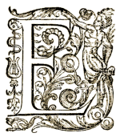

par Raphaël Collinet,
vicaire épiscopal judiciaire de l'Évêché de Liège

|
Églises ouvertes - Églises fermées - Enjeux par Raphaël Collinet, vicaire épiscopal judiciaire de l'Évêché de Liège |
|
n droit administratif, mais c'est la même chose en droit canonique, les églises paroissiales relèvent du domaine public. C'est notamment à ce titre, qu'elles sont exonérées du précompte immobilier.
Parce qu'elles relèvent du domaine public, les églises, en droit belge, ne peuvent être privatisées, ni réservées à quelques uns. Comme les gares, les hôtels de ville et autres maisons communales, les églises ont vocation à être ouvertes au public, à tous les publics et pas seulement au public catholique, à celui qui pratique le dimanche. La même conception prévaut en droit canonique.
On privatise les églises lorsqu'on les ferme... Elles ne sont alors ouvertes qu'à certaines personnes, hebdomadairement. C'est pourtant bien au-delà de ce cercle qu'elles intéressent.
En effet, on peut être attaché à l'église bâtiment tout en ne faisant pas explicitement partie de la communauté chrétienne. C'est très souvent le cas. Pour beaucoup de personnes, indépendamment de leurs convictions personnelles, l'église bâtiment, l'église physique, l'église monument est d'une importance considérable, non seulement parce qu'elle est un marqueur du paysage — imagine-t-on nos villages sans clocher — mais aussi parce qu'elle condense, par sa seule présence matérielle, ce besoin qui relève de l'intériorité personnelle propre à chacun et que la société si bien agencée qu'elle soit ne peut combler ni satisfaire.
Une église ne vaut pas seulement, par sa fonction liturgique, si importante et si nécessaire qu'elle soit. Humainement parlant, sa fonction est beaucoup plus large et répond à des besoins profonds. Si les églises sont affectées au culte catholique et si elles doivent le rester, cela ne peut signifier qu'elles soient réservées aux catholiques et encore moins aux catholiques pratiquants.
Il y a même un devoir de la communauté catholique à les ouvrir à tous, croyants ou non : il y a un devoir de la communauté catholique d'accueillir dans ces lieux toute personne qui s'y présente, parce que ces lieux parlent d'eux-mêmes un langage nécessaire, parce qu'ils appellent d'eux-mêmes à la réflexion et à l'intériorité, parce qu'ils sont d'eux-mêmes un remède à cette légèreté de l'être qui nous menace aujourd'hui.
Les églises sont des lieux distincts, inhabituels, différents, spirituellement habités, où l'on est naturellement confronté à un au-delà de soi et du quotidien. Ce sont des lieux de silence et de calme où l'espace et le temps retrouvent leurs densités propres. Ce sont des lieux pacifiant et ce n'est pas un luxe aujourd'hui de les proposer. L'intérêt que représentent les églises comme telles n'est sans doute pas quantifiable, mais il est d'importance. Elles ne peuvent rester fermées.
De qui dépend l'ouverture des églises ?
Des fabriques d'églises d'abord. La mission des Fabriques est de veiller à l'entretien et à la conservation de ces édifices, d'assurer également l'exercice du culte et la dignité de son déroulement. La notion de culte qui est ici employée doit être entendue dans une acception large. Elle ne peut d'aucune façon être restreinte à la seule célébration eucharistique.
Permettre aux personnes d'entrer dans une église, soit pour prier, soit pour s'y reposer ou encore pour la visiter avec le respect qui convient, fait partie de cette mission cultuelle qu'il incombe aux Fabriques d'églises et à la communauté chrétienne de promouvoir. La mission des Fabriques d'églises et de la communauté chrétienne consiste à ouvrir les églises, non à les fermer.
Tout le monde convient d'ailleurs, qu'il serait mieux que les églises soient ouvertes. C'est à regret que des chrétiens en arrivent à les fermer, parce qu'ils trouvent des raisons pour le faire. Elles ne sont pas pertinentes.
Pourquoi ferme-t-on une église ?
D'abord en raison du vandalisme et des vols dont elles font l'objet. On ne peut nier ceux-ci. Lors d'un vol spectaculaire effectué à Tournai, on a cité le chiffre de huit cent objets annuellement volés dans les églises de Belgique. Six à huit pour cent d'entre eux seulement sont récupérés. La Belgique, pour nos voisins français, est une plaque tournante de ce « commerce » maffieux et très lucratif des œuvres d'art, qui pèse de façon anormale sur les églises. Cette situation pose un problème tant politique, que d'efficacité policière.
Pourquoi le politique laisse-t-il ainsi courir les choses ? Par indifférence ? Par désintérêt ? Au risque de donner à penser qu'il prête une oreille trop sensible au monde de ceux qui profitent de cette criminalité ? Interpellés les hommes politiques ne prêtent qu'une oreille distraite aux propos qu'on leur tient. Pourquoi si peu de moyens sont-ils donnés à la police pour enrayer cette criminalité ? Inconsciemment mais plus vraisemblablement consciemment, il n'y a pas de volonté politique pour que le cours des choses change en ce domaine. Il y a des personnes, jusqu'au Parlement sans doute, que l'appauvrissement du patrimoine religieux ne gênent pas, voire peut-être contentent.
Mais ce qui importe de noter ici pour notre propos, c'est que l'essentiel de ces vols a été effectué dans des églises fermées. Ce qui montre bien que fermer une église n'est pas une solution. À le faire, on ne sécurise pas l'église, on sécurise les voleurs : ils savent qu'ils peuvent opérer à l'aise, puisque personne ne viendra plus les déranger. Le vol n'est pas une raison suffisante pour fermer les églises. En plus est-il justifié, parce qu'un vol a été commis, il y a longtemps parfois, qu'une église reste fermée aujourd'hui ?
Sans doute, y-a-t-il des précautions à prendre. Pourquoi laisser les sacristies ouvertes ? Les armoires ouvertes ? Pourquoi laisser les micros et la sono en place après les offices au lieu de les ranger en lieu sûr ? Mauvaises habitudes que de laisser traîner des clés au coin d'une nappe d'autel. Le secret de cette cachette est vite éventé. Pourquoi laisser les objets de valeur à portée de main ou simplement posés sur un socle ? Pourquoi ne pas fixer les objets ? Les mettre en hauteurs ? Tout cela est du ressort des Fabriques et est fréquemment rappelé par les services diocésains. Mais force est de constater que beaucoup de Fabriquesn'ont pas réellement conscience des richesses contenues dans leurs églises. Il y a, dés lors, une prise de conscience insuffisante des problèmes de sécurité minimale. Rares sont les Fabriques où l'un des membres est spécialement attentif à cette question. Quant aux inventaires, exigés par la loi, quand ils sont établis, ils sont peu souvent mis à jour.
Ce n'est pas seulement le vol, c'est parfois la peur du vol qui amène à fermer les églises. On veut avant de les ouvrir installer un système de protection efficace ou adapté. On veut que cela coûte cher et qu'on en n'a pas les moyens et dés lors les choses restent en état ... de fermeture. Pourtant, toujours à l'occasion de ce qui s'est passé récemment à Tournai, le responsable de la société CODINE, une société spécialisée dans la protection des lieux ouverts au public, notait qu'il fallait parfois peu de choses pour sécuriser davantage un lieu. Les voleurs, ajoutait-on s'appuient précisément sur ce sentiment, que le patrimoine des églises n'est absolument pas protégé pour passer à l'acte... Les voleurs sont des êtres humains. Ils privilégient la facilité, ils privilégient des cibles qui leur paraissent le plus aisément accessibles, il suffit parfois d'un rien, pas tellement onéreux, pour les inciter à aller voir à côté, ailleurs. L'essentiel est que le voleur ait ici conscience d'un risque d'échec important, que ce soit pour accéder à l'œuvre ou encore pour s'échapper une fois le forfait accompli... Si les églises et les édifices religieux sont aujourd'hui des solutions de replis en vogue dans le milieu des voleurs, c'est principalement parce que la sécurité des musées a été renforcée. Les fabriciens devraient certaines mesures et étudier le dossier de la sécurisation des églises, en parler avec les administrations communales et amener celles-ci à prendre leur responsabilité vis-à-vis d'un patrimoine, qui est, comme on le sait, aussi communal.
Dans certaines régions, on est beaucoup plus avancé que chez nous, ne serait ce que dans la réflexion devant mener à une meilleure protection.
Quoiqu'il en soit, fermer une église n'est pas une solution. Que ce soit en ville ou à la campagne fermer une église est un signe de démission, d'abandon, un signe d'une église morte et sans avenir. Or je pense que les églises ont un avenir mais pour cela il faut qu'elles soient ouvertes.
On ferme également les églises, parce que la police locale le demande. Elle est fatiguée de devoir intervenir. Elle déclare son intention de ne plus intervenir si les lieux ne sont pas fermés... Disons-le tout de suite ces recommandations policières, lorsqu'elles sont émises sont inconvenantes, et irresponsables. C'est au législateur à prendre les dispositions pour que la Belgique ne demeure plus cette plaque tournante du trafic d'œuvres d'art et c'est à la Police de veiller à la sécurité publique. Il ne lui appartient pas de se défausser de cette responsabilité sur d'autres, de trier dans ses missions ce qui lui convient et de laisser le reste. Quant aux Fabriques d'églises, leur mission est de laisser les églises ouvertes. C'est une mission fondamentale et c'est la leur.
Mais, les Fabriques d'églises ne peuvent agir sans l'aide de la communauté chrétienne. Il appartient aux chrétiens d'aider les Fabriques à ouvrir les églises. Je ne dis pas que les églises doivent rester tout le temps ouvertes, ce serait, sans doute, l'idéal. Mais, je pense qu'elles devraient l'être journellement, pendant quelques heures et que pendant ces heures, des chrétiens devraient y être présents pour accueillir les visiteurs un peu comme on reçoit chez soi. Il n'est pas normal qu'une communauté chrétienne oublie ces lieux et qu'il ne se trouve personne parmi elle, pour les fréquenter à certaines heures, ou plus simplement, pour y prêter attention ne fût-ce que de l'extérieur.
Il n'y a pas de raison valable qui explique que des chrétiens en arrivent à fermer les églises en empêchant les autres d'y entrer. À le faire, on se donne sans doute bonne conscience, mais il y des bonnes consciences qui sont fausses.
Si on ferme les églises, c'est en fonction de leur patrimoine mobilier. Mais, réalise-t-on ce que l'on fait en fermant une église ? En le faisant, on transforme nos églises en musées, avec la circonstance aggravante qu'ils sont fermés. On en fait des cimetières d'œuvres d'art, des lieux morts. Ce faisant on privilégie l'accessoire, on sacrifie le principal qui relève du spirituel. On sécularise ces lieux, on les prive de signification spirituelle, on en fait des conservatoires, des reposoirs inaccessibles, des espaces semblables aux autres et qui ne sont plus distingués. Au nom de la protection d'un patrimoine mobilier, un patrimoine qu'en l'occurrence personne ne peut plus voir, on laisse mourir tout un patrimoine spirituel, à mes yeux plus important, puisque l'autre n'était et n'avait été réalisé que pour lui. Ce patrimoine immatériel vaut certainement la peine que l'on s'y attarde et qu'on le laisse parler. Et pour cela il faut que les églises soient ouvertes et accessibles.
J'ajouterai encore ceci. Le souci de conservation qui a court aujourd'hui et qui amène à fermer les églises est un phénomène récent. Ceux qui nous ont précédés ne le connaissaient pas, parce qu'ils avaient conscience de pouvoir refaire ce qui était perdu et peut être encore mieux. Nous nous sommes appauvris de ce côté aujourd'hui. Nous conservons parce que nous avons le sentiment de ne plus pouvoir créer, de n'en n'avoir plus les moyens, de n'avoir plus que du dérisoire à proposer, par rapport à ce qui a été. La foi a été au cours des siècles une source d'inspiration jamais éteinte pour les artistes. La meilleure réponse que l'on puisse donner aux voleurs, c'est qu'elle le redevienne. Fermer une église est non seulement inutile, c'est aussi abdiquer devant la violence qu'on leur fait. Le souci de conservation qui aboutit à fermer les églises, lorsqu'il est poussé à l'extrême détruit la pensée créatrice et croyante. Je pense que des journées comme celle-ci, qui attirent notre attention sur l'ouverture des églises, peuvent être importantes également à ce point de vue. Je remercie « Églises ouvertes » d'y contribuer et j'invite toutes les fabriques à s'inscrire dans cette initiative.
Pour aller plus loin sur le même sujet (par S.M.C.J.) :
- Journée d'étude pour les responsables et accueillants, Séminaire épiscopal, Liège, 6 mars 2008, fichier PDF source du présent texte sur le site Web « Églises ouvertes ».
- Discussion sur le sujet sur le forum de l'Hydraule.
- Des clefs pour... des églises ouvertes et accueillantes, Dominique Rabet, D.R Consultant — Atout France (ODIT France).
- Les églises seront-elles des musées, Robert Pousseur, Éditions de l'Atelier.
- Pour des églises ouvertes malgré tout, Esprit & Vie no82 / mai 2003 — 2e quinzaine, p. 38-39.